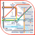There
is the
tube map as you've grown to know and love it, and there are spins
offs - many spins off, that I've come across and collected, and are all
nicely here for you in one place. Some are useful, some are a little silly.
Click on the smaller thumbnails of each map for the full size version.
Somewhat Useful ...
Realistic Geographical Map
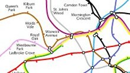Here's what the tube system really looks like if it were drawn accurately! It makes you realise how cool Harry Beck's original is to compress it down into the 'pocket size' map that you've come to know and love today. There are two versions here, a smaller one (fits on screen), or much larger detailed version that doesn't fit nicely on screen!
{kind=link}
{kind=link}
This map was made by Simon Clarke, who has his own website with other tube maps at www.simonclarke.org/lul/ and I believe that an updated version of the geographical map is being worked upon.
The Real Underground
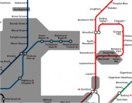A map which I made myself in a spare hour or two. This is part of a long term plan to have a map that shows you where you can and can't get mobile phone coverage, so to start with I've made a map with shaded areas showing what parts are actually underground.
{kind=link}
Slightly deceiving is the fact that many of the 'cut and cover' stations on the circle line do break out into the open occasionally, and some whole stations (e.g. Notting HIll Gate) are in fact in the open, but still technically 'underground'.
It's quicker to walk
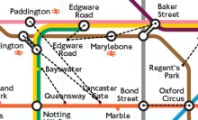The quickest way to get around London is not always to take the train!
{kind=link}
Taken from the RodCorp website, this excellent map shows dotted walk lines between stations where less than 500 metres, and thus quicker to walk than to take the train between stations.
There are variations on Rods website including different size versions and a faded out version so that you can see the walk lines more clearly.
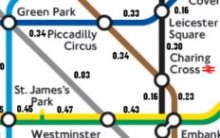Distance between stations
{kind=link}
Ever wondered how far it is between stations? Ok, maybe not - but if you ever did then this map would tell you.
Someone's taken bloody ages getting all the distances between stations and putting them all onto one map here.
Travel times between stations
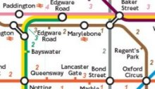And now you know the distances - how about some realistic timings?
{kind=link}
Ok, here you go then - the average time in minutes it takes to travel between each stop. Presuming there isn't a signal problem or points failure, that is ...
Physical Map
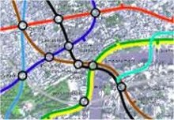This is fairly amazing - it's a huge JPG but worth downloading and scrolling about on.
{kind=link}
It's a physical map of London with surface features with the tube lines then shown on top of it. You get to see where the tube lines really run and where the stations really are in relation to each other, and the overlayed map of London.
Less Useful ...
 Where
have all the stations gone?
Where
have all the stations gone?
I did this one myself! Why? Because I thought it would an excellent test for when my mates are pissed down the pub one night - so it's a blank tube map!
See how many stations you can (correctly) fill in within ten minutes.
 Caught
Short?
Caught
Short?
This weird, but wonderful creation was sent into me by a chap called James. He took the blank map, and then marked onto it every station that has toilets, so you can see at a glance where you can go to relieve yourself if you get caught short!
Where the names have been changed ...
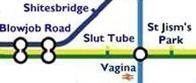The Rude Version
{kind=link}
This is somewhat 'risque' to put it mildly, so perhaps you'd better not look if you're offended by extreme profanities. But if you like that sort of things, then you'll find it wonderfully funny.
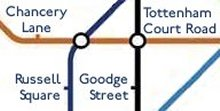Upside Down Version
{kind=link}
Ok, and here's something I did myself when I had spare 5 minutes. Ok, so it actually took quite a bit longer than that to do - so I hope you appreciate it. It's an inverted tube map!
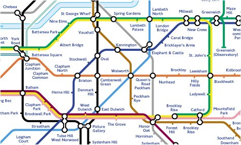Upside Down Map - with North/South reversal
{kind=link}
What would the tube map look like if South London had all the tube trains instead of north London having the majority of them as it does at the moment?
Something like this !
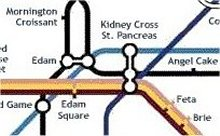London Undergrub - London has never tasted so good
This is quite nice - the person that made this map gives me a credit for inspiring them to do it!
They took the blank 'template' that I offer (above) and added food reference to every station mark to produce 'London Undergrub'. And I love Mornington Croissant - inspired!
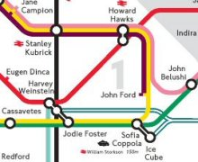 Moviemaker Map
Inspired by the 'Great Bear' map (see below), and my whole collection here of alternative maps, a chap called Thomas at his website bluebones.net created this, the MovieMaker Map where lines consist of Director, Actor, Cinematographer, etc..
The clever part being that interchanges now makes sense on all lines (unlike the Great Bear) which is quite neat.
 Musical
Map
Musical
Map
This variation first appeared in February 2006 in The Guardian with a map where every line is a music style/taste and then each station along the line is an artist that fits that genre.
It's been cleverly done so that where lines intersect you could argue that the artist could fall into the mixed genres of the intersecting lines.
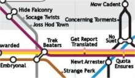Anagram Map
{kind=link}
Another variation where the standard map has been taken and different names have been written in instead - in this case, someone's taken the effort to work out an anagram of each station name.
 The
Company Sponsored Map
The
Company Sponsored Map
Yet another (aren't we getting bored of these yet?) variation where the station names have been changed. This time though, each station name has been cleverly changed to match, or near-match the name of a well known company. e.g."Cannon Street" becomes "Canon Street" - as in the camera company. PDF format only.
The Great Bear
An artist called Simon Patterson was probably the first person to bastardise the tube map as we know and love it, when he reworked the map calling it 'The Great Bear'. It makes you look twice when you see one in print for each line covers a particular 'topic', be it philosophers, footballers, scientists or actors; and at each station a 'star' (i.e. like the brightness of the Great Bear constellation) of that particular field is heralded.
I have no small image of it to show here, nor have a local copy, but you get see & purchase the map for real at this site here.
And some others ...
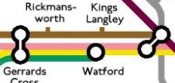The Tube Motorway / Motorway Map
{kind=link}
Tired of taking the train? Then why not drive around London in a car using the extensive motorway system instead. And here's a handy map showing you all the main motorways ... (Note - This is from Tom Sutch's website 'Apex Corner' - a site dedicated to British Roads!)
There is also The Motorway Map of the UK - it's based on a Harry Beck tube style map, but isn't really anything to do with the tube. however, the nice man that made it Gerald Higgins mailed me asking if I'd link to it, and hence I am.
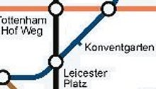In German (One) - Not entirely serious
{kind=link}
I'm not sure of the origins of this one, but it got emailed to me my a friend and thus appeared in my inbox one day.
It's the regular tube map as you know and love it ... but all in German!
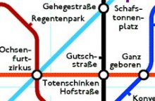In German (Two) - Properly translated
{kind=link}
Off the back of the silly German named one (above) someone then sent me a link to this version which is a real literal translation of the tube network but all in German. And no, I don't know why either !
Note that this is in PNG (Portable Network Graphics) format, and might not be viewable on JPG/GIF viewing applications.
Other map links ...
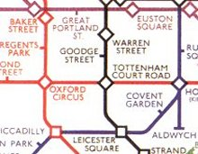There's a totally excellent and complete history of all the official LU maps over the years, here at the History of London Tube Maps pages.
There is a website at www.cryptart.com/tube that also contains unusual tube maps.
Owen Masseys Mappers Delight also has many of the maps that I have here, but links to a few other alternative ones too.
Internationally speaking, I found an excellent page here that has the cover shots of all the maps from the New York subway dating back to 1925. It doesn't have the actual designs of the maps unfortunately, but it's still quite cool.
Someone has taken the time to design their own 'Great Bear' style map, but this time for the Birmingham bus system.